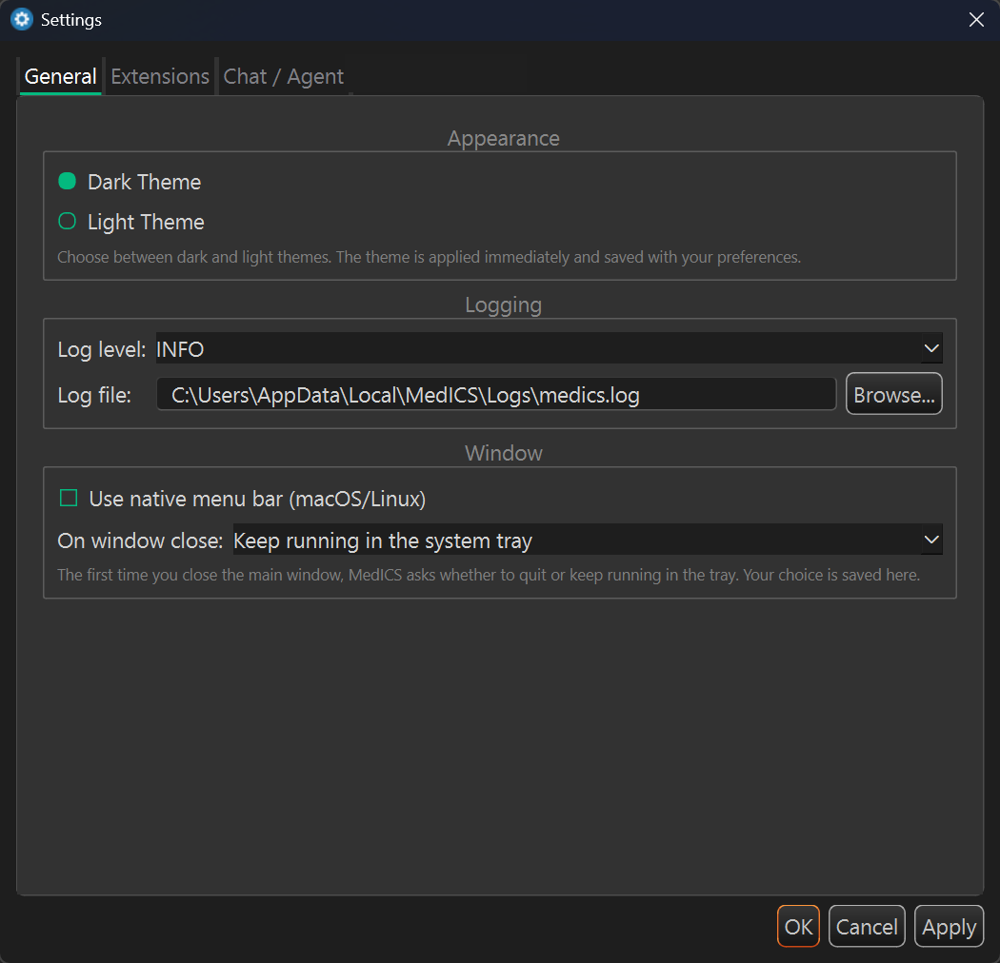
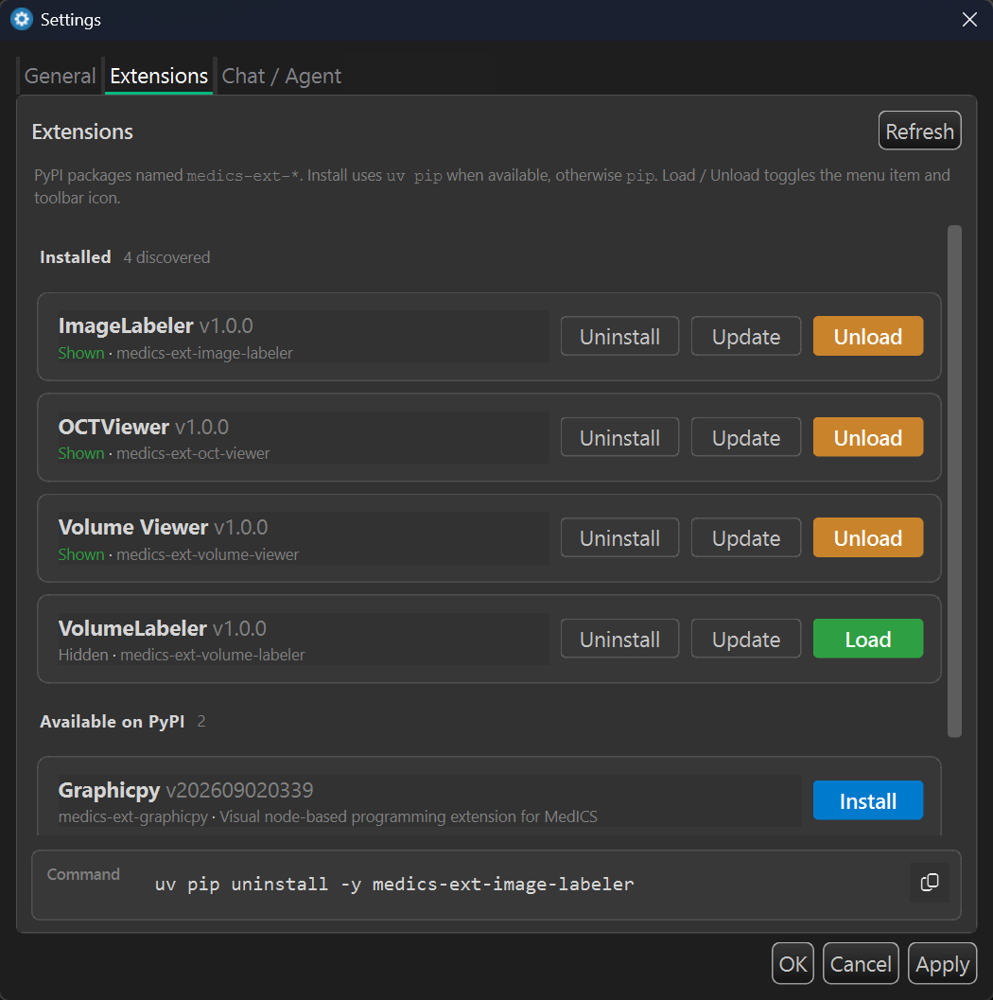

Settings & preferences
Open preferences from the Settings gear at the bottom of the Activity Bar. On macOS it is also in the application menu as Preferences…, and the Extensions menu has Open Extension Manager…, which opens this dialog on its Extensions tab. The chat settings open the same dialog on its Chat / Agent tab.

The dialog is split into four tabs:
| Tab | What you set there |
|---|---|
| General | Theme, logging and window behaviour. |
| Extensions | Install, update, enable and remove extensions. |
| Chat / Agent | The AI provider, model, keys and the agent harness. |
| MedICS Token | Your license token and its status. |
Three buttons sit along the bottom of every tab:
| Button | What it does |
|---|---|
| OK | Applies the changes and closes the dialog. |
| Apply | Applies and saves without closing; a short message confirms it. |
| Cancel | Closes the dialog without applying anything. |
General
Appearance
Two mutually exclusive choices — Dark Theme and Light Theme. Choosing one applies it immediately so you can preview it, and the choice is saved with the rest of your preferences.
Logging
| Control | What it does |
|---|---|
| Log level | How much detail is written: DEBUG, INFO, WARNING, ERROR or CRITICAL. Default: INFO. |
| Log file | The full path to the log file. Use Browse… to pick one; the platform default is shown as a hint. |
Changing the log level takes effect straight away.
Window
| Control | What it does |
|---|---|
| Use native menu bar (macOS/Linux) | Draws the menus in the operating system's own menu bar where the platform supports it. |
| On window close | What happens when you close the main window: Ask me when I close the window, Quit MedICS completely, or Keep running in the system tray. |
The first time you close the window, MedICS asks you to choose; the answer is saved here. Quitting from the tray menu always exits completely.
Chat / Agent
Everything the AI assistant needs: which model provider to use, your key, and how the assistant is hosted. Your API keys are stored separately from the other settings and are never committed anywhere.
Agent UI
| Control | What it does |
|---|---|
| Show agent window button and Chat panel | Shows or hides the whole assistant chrome — the Agents Window menu item and shortcut, the menu-bar button, and the right-hand Chat panel. Applied immediately. |
| Agent Harness | Which assistant runtime to host: MedICS Harness (the built-in chat), DeepSeek Harness (a local WebUI), or OpenCode (a local WebUI). |
| WebUI URL | Read-only. Shows the address of the embedded harness, or that the MedICS harness has no embed URL. |
| Restart / Reset status | Recycle the harness host, or just clear the current run's status without remounting the chat surfaces. |
| Install / Refresh | For the DeepSeek and OpenCode harnesses: install the runtime, or refresh its status. |
Switching harness, or showing/hiding the assistant chrome, refreshes the main window immediately — no restart is needed.
Provider & model
Active provider selects which service the assistant uses. Pick one, then fill in its card:
| Provider | You provide |
|---|---|
| ChatGPT (OpenAI) | API key, model. |
| Gemini (Google) | API key, model. |
| Claude (Anthropic) | API key, model. |
| Grok (xAI) | API key, model. |
| GitHub Copilot | Sign in with GitHub (no key to paste), model. |
| Ollama (Local) | Base URL and model; Discover lists the models your local server offers. |
| DeepSeek | API key, model. |
| Custom (OpenAI-compatible) | Base URL, optional key, model. |
In each card:
- API key — enter the key; use the eye button to show or hide it. If a key is already saved, its last digits are shown as a hint.
- Model — pick one of the offered models or type any model name. The ↻ button refreshes the list from the provider, and + adds a custom name to the list.
- Base URL — only for Ollama and Custom providers.
- Sign in with GitHub / Sign out — only for GitHub Copilot; a status line shows the sign-in state.
Conversation Settings
| Control | What it does |
|---|---|
| Temperature | How creative the replies are, from 0.00 to 2.00. Lower is more focused. |
| Max tokens | The longest reply the assistant may produce. |
System Prompt
The instructions prepended to every assistant prompt. Edit them to change the assistant's behaviour, or use Reset to default to restore the built-in text.
Keys are saved to your MedICS home folder in .secrets.ini, separate from the
other settings. The Open .secrets.ini button opens that file in your text editor.
Extensions
Extensions are installed and managed from this tab — the same place the Extensions → Open Extension Manager… menu item opens.

The list has two parts:
| Section | What it shows |
|---|---|
| Installed | Each extension with its version, its package name and a status: Shown (loaded and visible in the menu and toolbar), Hidden (loaded but not shown), or Not loaded. |
| Available on PyPI | Packages you can add, with a short description and an Install button. |
For each installed extension:
| Button | What it does |
|---|---|
| Load / Unload | Shows or hides the extension in the Extensions menu and the Activity Bar. Unloading frees it without removing it. |
| Update | Updates the extension and restarts MedICS to finish. |
| Uninstall | Removes the extension; the removal completes after a restart. |
Install, update and uninstall all ask you to confirm first, and offer to restart MedICS when the change needs it. A Refresh button re-checks what is installed and what is available.
At the bottom, the Command panel shows the exact command for the action under the pointer and has a copy button — useful if an operation fails and you want to run the command yourself in a terminal. The panel also shows the command's output if something goes wrong.
Extensions install into MedICS's own Python environment, so no separate setup is required. See Extensions for how extensions add tools and panels.
MedICS Token
Where you check and enter your MedICS license token.
License Information
Read-only fields describing the current license — Token ID, Email, Plan Type, Start Date, Expire Date, Last Checked and Status. The status reads Free mode — no token configured before a token is entered, and ✓ Valid once one is validated.
Validate Token
Paste a token — the format is XXXX-XXXX-XXXX-XXXX — and click Validate to check it with
the license server; a valid token is saved automatically and the License Information above is
refreshed. The section also links to how to request a token.
Remove Token
Remove Token returns MedICS to Free mode: free-tier extensions stay available, while paid features are disabled until a valid token is entered again.